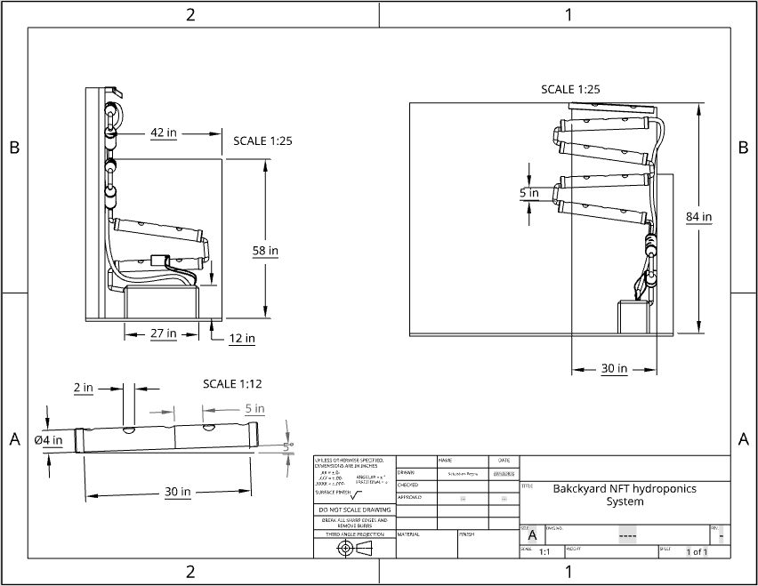
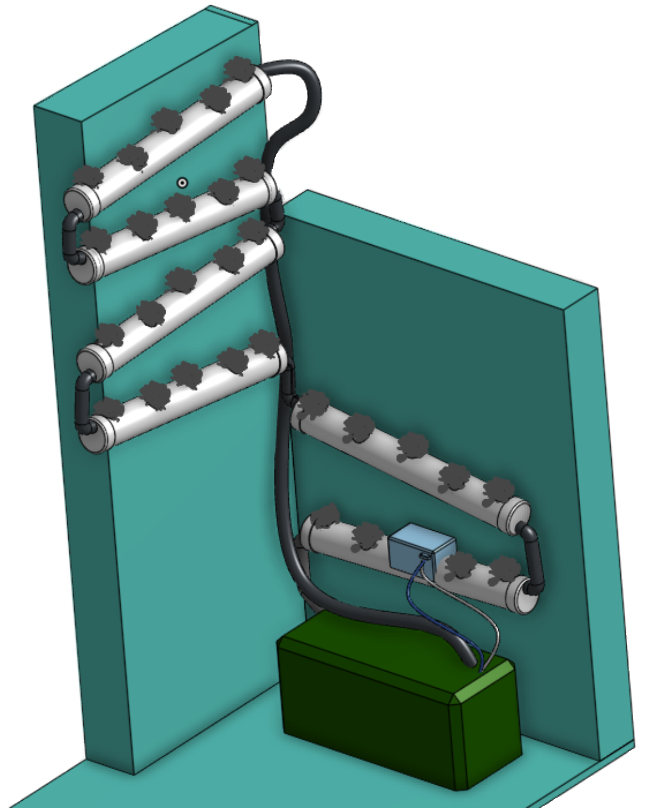

Building NFT

Building a hydroponic NFT System
Jun 2025 -present
Author: Sebastian Reyna
Table of contents
Needs Assesment
For this project I was given a small corner of my backyard due to the fact that this space was out of the way enough that the view of the backyard could be enjoyed better. While this specific space came with perks such as a nearby water source, an outlet, and steady wifi it does not get as much light as the rest of the backyard. The location is unique in the fact that it is verticle using the wall space as much as possible. It is built on 2 perpedicular walls that intercept, the first is 2.5 ft W x 7ft H, and the other is 3.5 ft W x 4 10 ft H. I also have about 3 feet of floor space extending from the latter wall which is were I will place my water reservoir.

Materials list
Project Overview
Visuals and Farm planning document LINk


Project analysis
Conclusion
Though I have yet to test out the system with plants because mine are still germinating, I am very confident that it will work, and have done testing running it for hours at a time to check for water loss with much success. While the location I chose doesn't allow for as much light as would be ideal, my workaround should allow for the system to still operate nicely. In hindsight, the tubes I bought for my system weren't the ideal shape, when it comes to NFT it is best to work with flat bottomed media so that the nutrient film is nice and leveled the width of the media.
Maintence
Daily
- Nutrient Testing and Dosing
- ph/EC Testing and Dosing
- Inspect plants for health
- Inspect plants for bio film or algae
- Checking for possible clogs
- Making sure air pump is charged
Weekly
- Check pump health
- Check for leaks or other damage
Monthly
- Reservoir purge
- Check electrical components
- Check airstones
- Replace dead or unproductive plants
Every 6 months
- Full system cleanout
- Replace plants